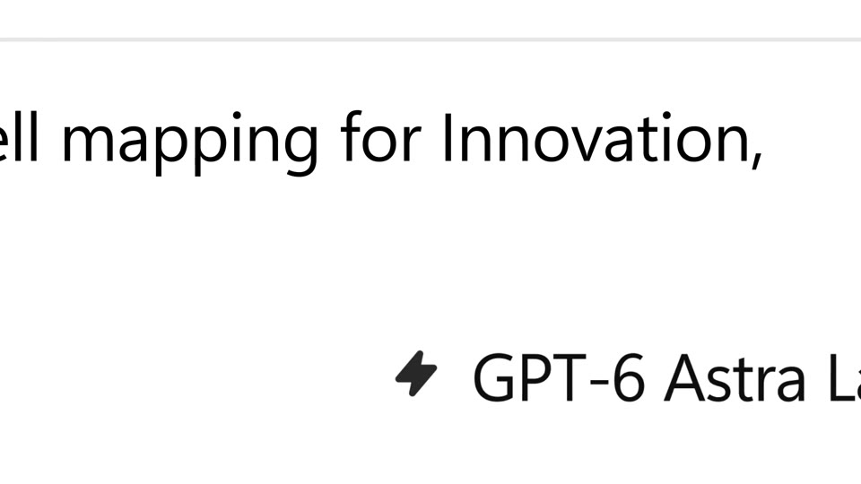
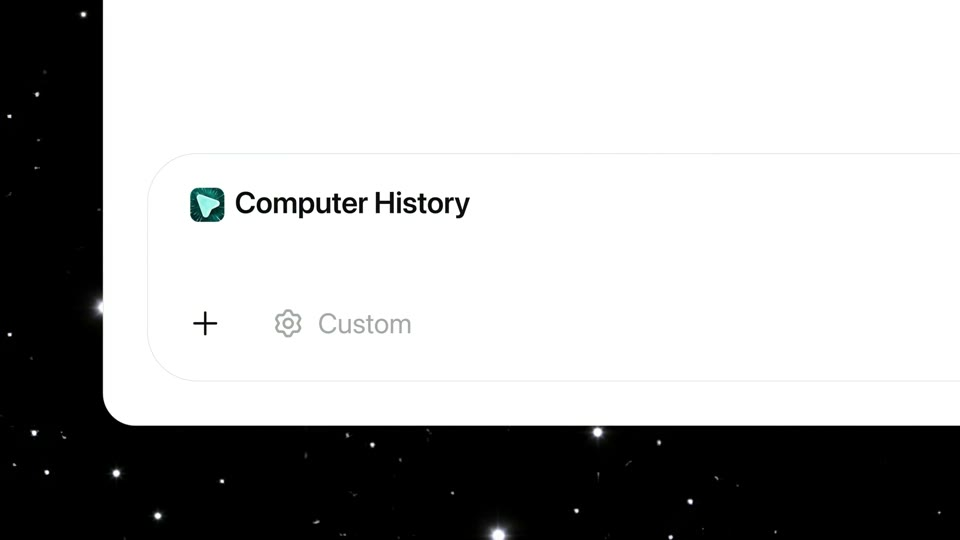
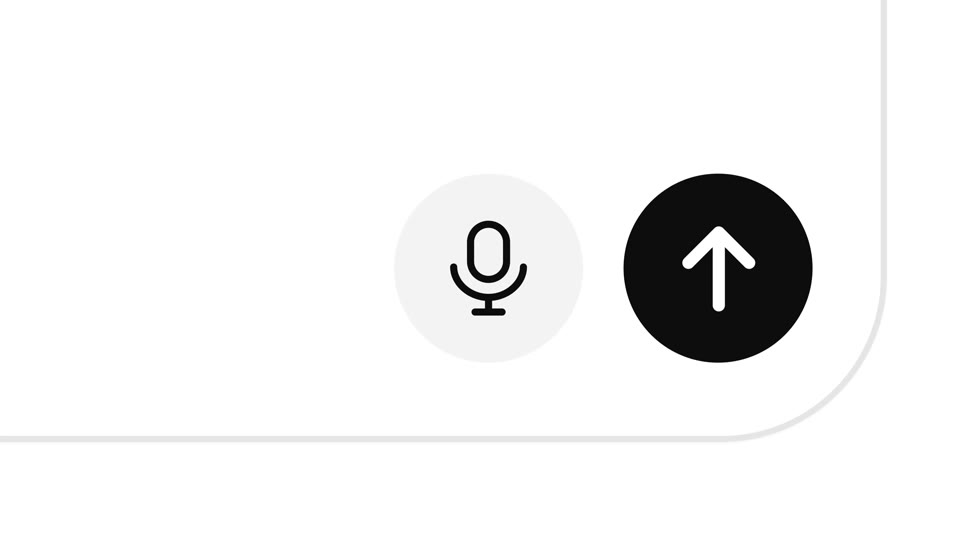
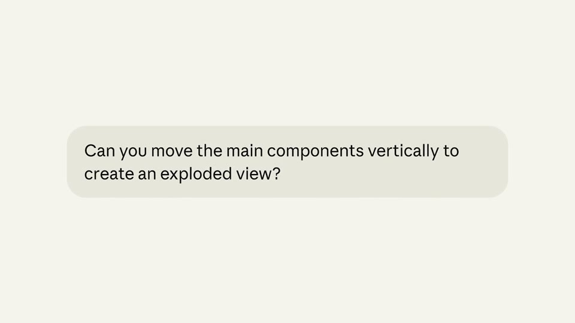
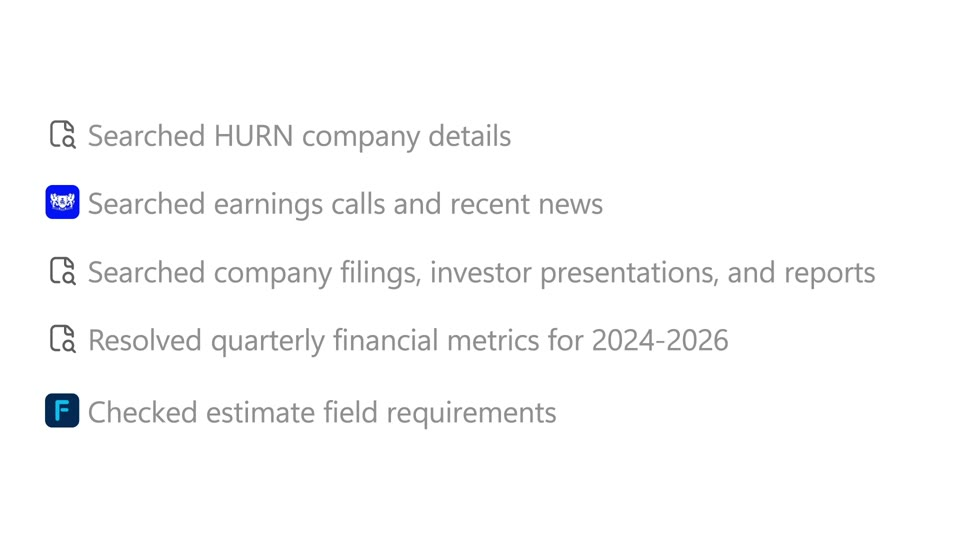
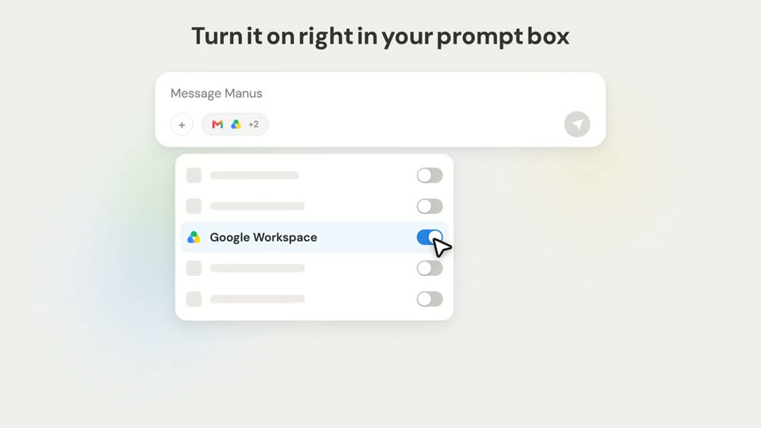
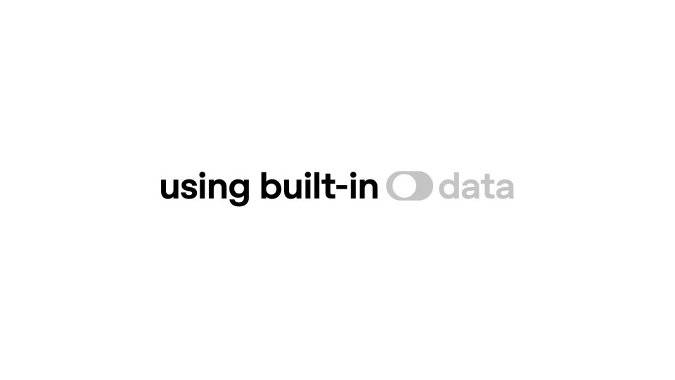
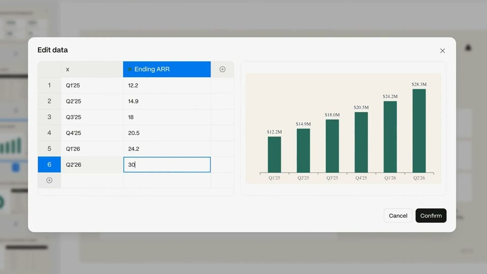

Product
How the UI appears: rebuilt, cropped, pushed into. 16 cards, each merged from the techniques the eight study passes recorded. The frame on every card is a real frame from the first film listed under it.
Product · input

The camera rides the caret, then pulls back
The input at 2–5× (text cap 5–15% of height), edges off-frame; the camera pans with the caret, linear, ~one field width per 2 s. Then a pull-back in ~0.8 s (ease-in-out) to the whole field at ~84% of width, and send.
For Kallo: The meal typed at 5×, the camera following the caret, then a pull-back to the whole iPhone input and the send tap.
Also: OpenAI · Computer History 0:03.8; SpaceXAI · Grok 4.5 0:14.6; Manus · Manus Browser Operator 0:12.9

Typed words snap into chips
A token types in regular weight; in one frame it becomes a bold named chip with an icon (6.3% of height) and typing continues after it. No animation between the states; the swap is the event.
For Kallo: As “chicken thigh” finishes typing it snaps into a chip with its grams. Each food in the sentence becomes a chip, in place.
Also: OpenAI · Codex for Chrome 0:05.0

One component at hero scale, off the edge
Crop so one row, button or control runs off the frame edge at headline scale: text cap 4.5–6%, a button up to 35–44% of the frame, rows above blurred ~12 px. An oversized cursor (6–17% of height) or a touch dot acts on it.
For Kallo: Crop to one parsed row, “Chicken thigh, skin removed · 125 g”, running off the right edge.
Also: Claude · Salesforce 0:11.5; Claude · Artifacts in Claude Code 0:46.2; Manus · Website Auto Publish 0:07.6; Manus · Manus Agents 0:20.3; SpaceXAI · Voice Agent Builder 0:09.0

The prompt alone, full frame
Nothing but the input bubble: 64–77% of width, 4.8–5.2% of height per line, 2–3 lines, held ~2 s. Then the context appears around it and the camera pulls back ~2.3× in 0.35 s into the app.
For Kallo: The meal sentence as one full-frame Kallo pill for 1.5 s, then the pull-back into the iPhone.
Also: Claude · Dispatch 0:08.9
One input bar, many outputs
The same rebuilt prompt bar (49% × 9%) stays fixed at 85% of height for 30 s; outputs rise above it as floating cards (~57% of width) every ~2.4 s. Variant: the object of the prompt swaps in place every 0.5 s.
For Kallo: Kallo’s input fixed at the bottom; “oatmeal with blueberries”, “chicken burrito bowl” go in and each card rises above. Real captures only.
Also: OpenAI · Sites in Codex 0:16.6; Manus · Similarweb data 0:04.0

The device is a flat slab in a colour world
Front-on phone with no buttons (white or cream slab, 9–15 px frosted rim) at 80–87% of height on a gradient, sky or paper; or the UI frameless at ~1.9×. Push in ~2.3× in 0.5 s until one card fills 57–64% of width. Taps are a translucent dot.
For Kallo: The iPhone as a cream slab on the brand sweep, cropped by the bottom; push in until the meal card fills 60% of the frame.
Also: OpenAI · New voice models 0:02.0; Claude · Work tools on mobile 0:20.0; Manus · Manus Agents 0:02.5; Manus · Projects on mobile 0:00.8; SpaceXAI · Grok 4 free 0:02.5

A floating window; push past its edge
An app window (44% × 71%) sits on the gradient; a fast ~2.5× push goes into it and past its edge, then reframes so the key corner sits at ~80% × 73%.
For Kallo: The web app as one floating window; push in until the day’s totals fill the frame. The same move for iPhone and web.
Product · output

Numbers count while their bars run
Only the numeral counts (3, 15, 34, 54, 71, 80) over ~1.0 s, fast then slow; bars run to their value in ~0.4 s (ease-out) with a glint on arrival; chart ribbons grow over 1.2 s while their percentages count from 0.
For Kallo: 548 counts up in 1 s while the protein, carbs and fat bars run to 37, 72 and 13 g; a glint on arrival.
Also: OpenAI · Codex rate limits 0:08.8; Manus · Similarweb upgrade 0:13.0

A colour sweep rewrites the numbers
An extreme close-up of a grid (4 columns across 92% of width, figures 4% of height). A terracotta diagonal streak one cell wide sweeps cell by cell and rewrites each value: 8 cells in ~1.1 s, inputs first, totals last.
For Kallo: Kallo’s macro grid fills under a tan sweep: the ingredient rows first, the total last, ~0.12 s a cell.

Results resolve; they don’t pop
Each card arrives as a flat #F2F2F2 placeholder, shows a heavy blur of its content, and is sharp ~0.8 s later; cards stagger 0.4 s in a row that pans left.
For Kallo: kcal, protein, carbs and fat tiles arrive blank, show blurred numbers, then sharp, 0.4 s apart.

The work as rows that append
Grey rows (3.7% cap, 12.6% pitch) append one per ~0.6 s, each with a small source mark; or numbered rows whose progress rings fill in a stagger and flip to checks; an “N of N” bar fills on the last tick.
For Kallo: Kallo’s real steps: “Split into 3 ingredients”, “Matched chicken thigh, skinless (USDA)”, “Resolved portion to 125 g”, then “3 of 3 matched” and the total.
Also: Claude · Claude Managed Agents 0:31.0; Manus · PowerPoint mode 0:12.5; Claude · Salesforce 0:06.2

The pipeline lights up in turn
One dark panel: a question bubble, a dashed 1 px connector to an agent node, dashed branches to 3 tool tiles (7.5% of width); each tile in turn gets an orange border and a one-line status. Or a mono tool-call card at 2.5×.
For Kallo: Meal → Kallo → [portion · USDA · FAO], each lighting with its status line, then the result card rises.
Also: SpaceXAI · Voice Agent Builder 0:28.2

One real row among skeletons
Five rows: four grey skeleton rows (square, bar, toggle in #E6E6E6) and one real row with icon, bold label and a pale-blue highlight; an oversized cursor (~6% of height) clicks its toggle.
For Kallo: Every ingredient row grey except the one being explained (“chicken thigh, skin removed · 125 g”).

The sentence hosts a live control
A pill toggle the height of a capital types in like a character (OFF, light grey) inside the headline, then flips ON in the frame the next word turns blue. Variant: a superscript “3” gets a 1.6× push and opens a citation card.
For Kallo: “Every number has a source.³” – push into the ³ and a card opens: “Chicken thigh, skinless, grilled · USDA FoodData Central”.
Also: OpenAI · ChatGPT for Financial Services 0:45.5; Manus · Manus Skills 0:01.9

Fix one thing; everything recalculates
A cell is selected and retyped (“3” → “30” → “30.2”); ~0.3 s later the chart re-scales and the bar grows. Or a selected line gets a two-action popover (“Make a correction” / “Don’t mention this again”).
For Kallo: Change “125 g” to “180 g” on the chicken row, and the four bars and the total re-scale in the same frame.
Also: OpenAI · Memory controls 0:18.5

One day, told with the clock
One card on a night sky restyles every ~2 s as its caption clock advances (1:12 AM → 3:26 AM → 5:41 AM); the card is the only thing that changes.
For Kallo: One day card: “8:12 AM oats and banana” → “12:40 PM chicken rice” → “7:05 PM pasta”, the day total climbing.